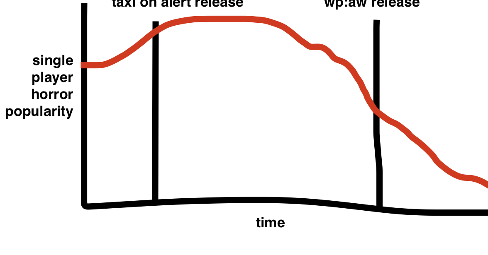
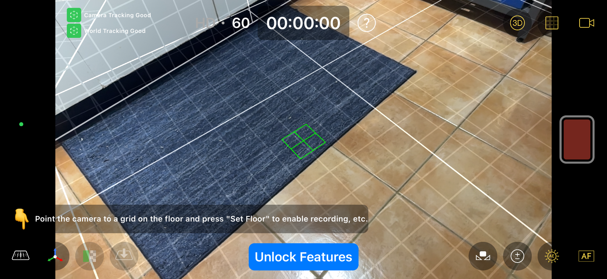
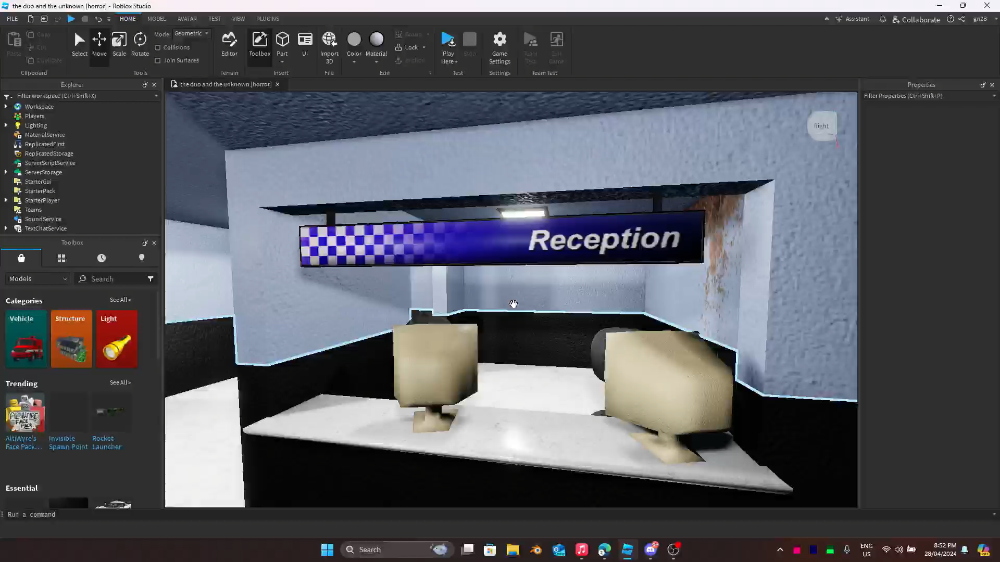
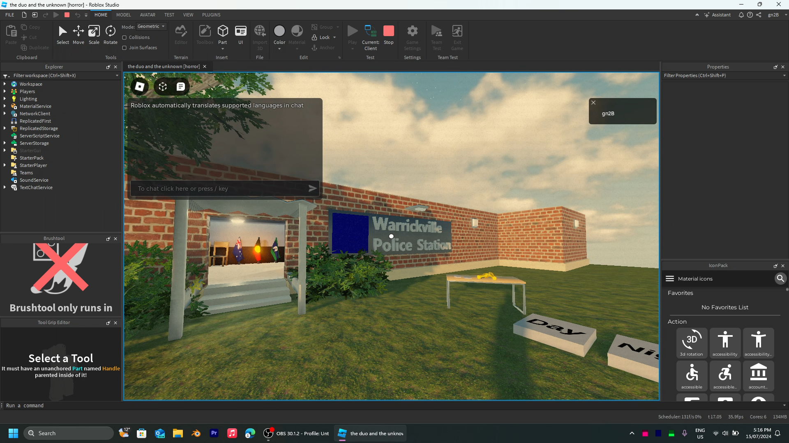
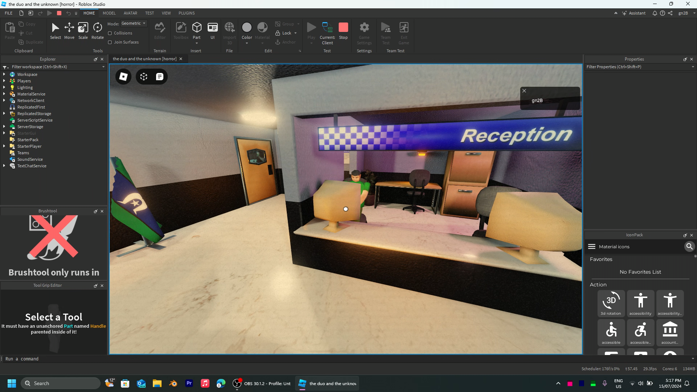
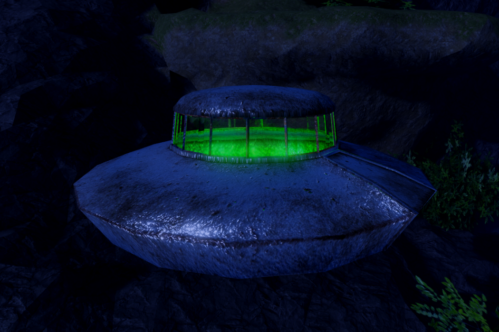
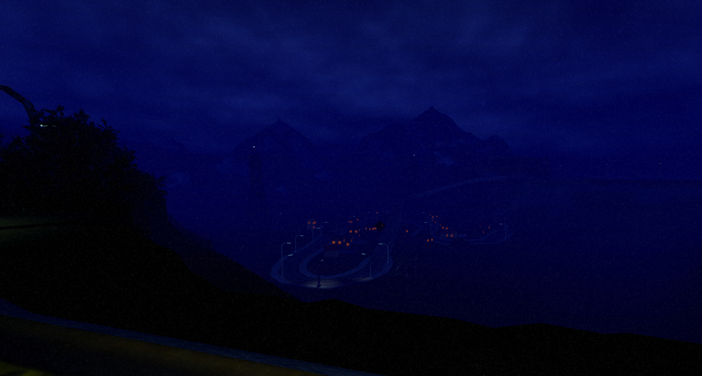

Last updated on 5th of January at 8:46pm UTC+11
from around early 2024-mid 2025 i worked on this horror game. as guessing by the date this took a really long time to make, and its mostly due to my interest in other engines really peaking here, like I didn't want anything to with Roblox due to the controversies around it. But regardless I finished it[well 2 chapters but eh]
it all starts in early 2024, my previous game taxi on alert was really taking off and ofc I decided to not capitalise off the games success and create new chapters, but rather announce a new game. i wish i finished taxi on alert, and really polished it. but anyways. I immediately began announcing dates and story details on the new horror game[that will be a problem], it was going to be originally a co-op 2 player horror game. that was later changed to single player. but to provide some context, here was the horror game market on Roblox around the time i created taxi on alert and this new horror game:
do you see a problem??? around the release of taxi on alert was basically peak for single player horror games, I saw many others being made around this time with other games like jims computer in early 2023 taking off and spawning off a load of similar single player horror games, ones that were more psychological based in their horror. this rush of single player games started to die soon, and it was basically already dead again around the release of wp:aw[warrickville police: astral watch].
psychological horror, this was the goal of my first two horror games, but in the third, called warrickville police: astral watch I wanted a more comfy vibe, feeling inspired by The X-Files and its unique visual style; I just absolutely love the use of fog in that show and how it creates a unique aesthetic. I wanted that similar feeling in this game, especially considering it touched more on the paranormal.
this was probably the most difficult part of this game, the motion capture cutscenes, these had to sync with another animation for the character, as well as immediately load in for the player.
the motion capture itself was done in a app called CamTrackAR, which made this easy as it allowed importing to Blender, which was later converted to a Roblox animation by using a rig bone that followed the camera animation, real dodgy stuff.[it gets even more dodgy later]
this is the app running on my iPhone 14 Pro, but I didn't have this phone back then so I had to use an old iPhone XS which died every 10 mins. This app is incredibly easy to use, and should not be free.
syncing animations was an even dumber nightmare, instead of preloading the anim from the start of the game, which couldve worked, I instead created a custom event that would be sent a few seconds before the actual animations would be due to play—usually sending the event when the player is prompted to walk to something that would trigger the animation—telling the client to preload them and then would play the animation using another event sent to the client, now thats efficient and dodgy as hell. works tho.
that photo was it in blender in april 2024, was essentially just a potted plant there 😭
here it is in the roblox engine, with chairs and screens, the police station was coming to life!
this was one of the later photos, i think a week later, by now I had implemented some of the features including a custom item picker, it was super cool to do and this game genuinely had some of the best controller support in my games with nice haptics and a smooth feeling UI.
here I implemented a fake dynamic lighting, esentially how it worked was I put little light parts around the building, that would light up at certain times, with it having orange point lights during sunset. This literally made a fake GI[global illumination] that was super good looking, but this never ended up being used as the game takes place with someone who takes the night shift. oh well if chapter 3 ever happens, maybe that will take place during the day!
theres a sort of gap that happened, as I forgot to document my progress, but I continued posting on my discord server, adding a library for chapter 2 and creating very pretty ufo model, among other models for my game.
for that I leveraged some of Roblox's technologies including Streaming. But otherwise, I had to create my own custom made stuff, including a script that disables future lighting upon a far enough distance. As otherwise shadows would continue to be rendered on high graphic settings even when far away[like 50 studs]. being too far for anyone to actually notice it was on! so i just made a script to check the camera distance between each light part, and if it was far enough way i would disable shadows on the light! furthermore, I discovered that roblox models have two forms of streaming types with "StreamingMesh" and "Automatic" and I didn't know that automatic would simply stop rendering the object when far away rather than creating a low quality LOD. proving useful for bushes which had transparency and would be costly when rendering, especially since most were far, far away!
the visuals were mostly a last minute realisation, originally the game had a night that was just dark and ugly as seen above
whereas this is what it looked like after the atmospheric additions, including a blue colourcorrection filter and a changing of the lighting properties to be more blue.
but you may of noticed that there are orange lights being emitted from the houses, this was another realisation i came accross when i was trying to get stuff to render from far away, esentially combating the current roblox limitations. i had to put these orange glow parts into replicatedfirst, on the client side. thus allowing them to be visible from anywhere. this trick can be used for mountains or any distant prop you want rendered, but make sure the polys on those models are low so performance stays smooth. it looks so beautiful and aesthetic, truly making the little city seem more cosy.
ultimately the game would release, garnering around 1K visits. Nothing like the 295K achieved on Taxi On Alert but regardless I learned a lot from making this game, including how to optimise games better and i will use these skills on my next games on another engine like Godot.
play the final result here!